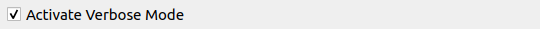

Daten Validierung
Du kannst deine physischen Daten direkt in QGIS gegen die INTERLIS Modelle validieren. Öffne das Model Baker Validator Panel über das Menü Datenbank > Model Baker > Daten Validator oder Ansicht > Bedienfelder > Model Baker Daten Validator.

Datenbank
Die Datenbankverbindungsparameter werden anhand des aktuell angewählten Layers ermittelt. Meistens ist das repräsentativ für das ganze Projekt, da die meisten Projekte auf einem einzigen Datenbankschema/-file basieren. Im Falle von mehreren benutzten Datenbankquellen, ist es möglich zwischen den Validierungsresultaten zu wechseln, wenn man den Layer wechselt.
Filterung
Du kannst die Daten entweder per Modelle oder - falls die Datenbank das Dataset und (Behälter) Basket Handling unterstützt - per Datasets oder Behälter filtern. Aber nur eine Art von Filter (--model, --dataset, --basket) wird dem ili2db Kommando übergeben (es würde keine Konjunktion (UND), sondern eine Disjunktion (ODER) ergeben, wenn mehrere Parameter angegeben werden (was nicht wirklich genutzt wird). Eine Konjunktion kann immer noch durch die Auswahl der kleinsten Instanz (Baskets) durchgeführt werden.)
Im Basismodell validieren
Das ist relevant, wenn du erweiterte Modelle verwendest: Du hast deine Daten in deinem erweiterten Modell gespeichert, möchtest sie aber vielleicht nur im Format des Basismodells validieren.

Geometriefehler überspringen

Wenn das Kontrollkästchen aktiviert ist, werden Geometriefehler ignoriert und die Validierung der AREA-Topologie deaktiviert. Fehler wie diese werden nicht aufgelistet.
- Sich schneidende Geometrien
- Doppelte Koordinaten
- Überlagernde Geometrien
Note
Im Backend werden die Parameter --skipGeometryErrors und --disableAreaValidation gesetzt.
Verbose Modus

Aktiviere den verbose Modus, um mehr (hauptsächlich technische) Informationen in den Fehlermeldungen zu erhalten.
Konfigurationsdatei
Es ist möglich, Constraints des aktuellen Modells via Metaattribute zu aktivieren/deaktivieren und zu benennen. Für die Konfiguration dieser siehe das Kapitel Metaattribute in der Konfigurationsdatei setzen unten.
Füge sie zur Validierung hinzu, indem du sie über den Dateibrowser auswählst.

Du kannst diesen Pfad mit der Schaltfläche  in deinem Projekt (in den Projektvariablen) speichern. Obwohl er relativ gespeichert wird, wird er als absoluter Pfad an ili2db übergeben.
in deinem Projekt (in den Projektvariablen) speichern. Obwohl er relativ gespeichert wird, wird er als absoluter Pfad an ili2db übergeben.
Note
Du kannst auch eine Konfigurationsdatei aus den ilidata-Repositories verwenden. Füge einfach den ilidata-Key (wie ilidata:<key>) als Pfad hinzu.
Resultat
Nach dem Ausführen der Validierung per  werden die Resultate aufgelistet.
werden die Resultate aufgelistet.
Mit Rechtsklick auf den Fehler öffnet sich das Menü mit den folgenden Optionen:
- Zu Koordinaten zoomen (falls Koordinaten angegeben sind) mit einer Ausdehnung von 10 Karteneinheiten
- Im Feature-Formular öffnen (falls eine stabile t_ili_tid verfügbar ist)
- In der Attributtabelle auswählen (falls eine stabile t_ili_tid verfügbar ist)
- Als behoben markieren (markiert den Eintrag grün und durchgestrichen, um den Behebungsprozess zu organisieren)
- Kopieren (um den Nachrichtentext zu kopieren)
Automatisches Schwenken, Zoomen und Hervorheben von Features oder Koordinaten wird durch Klicken auf den Eintrag in der Ergebnisstabelle ausgeführt. Beim automatischen Schwenken und Zoomen werden die Koordinaten berücksichtigt, wenn sie von ili2db bereitgestellt werden, andernfalls die Geometrie des Features (gemäß der von ili2db bereitgestellten OID). Beim automatischen Zoomen auf die Geometrie des Features wird deren Ausdehnung verwendet, bei Koordinaten stattdessen eine Ausdehnung von 10 Karteneinheiten.
Note
Da ili2db bei Nicht-Geometriefehlern manchmal ebenfalls die Koordinaten liefert, kann es zu Verwirrung kommen, wenn dorthin gezoomt oder geschwenkt wird. Dennoch ist es vorzuziehen, bei Geometriefehlern nicht zu den Koordinaten zu zoomen oder zu schwenken, wenn sie eine OID liefern. Aktuell kann der Validator diese Fehlertypen nicht unterscheiden.
Verwendung von Metaattributen in der Validierung
Zusätzlich zur Konfiguration von Metaattributen, die für die physische Datenbankimplementierung und die QGIS-Projektgenerierung verwendet werden, können Metaattribute für die zusätzliche Konfiguration der Validierung genutzt werden, wie z. B. das generelle Deaktivieren bestimmter Prüfungen oder auf bestimmten Objekten sowie das Benennen der Constraints.
Metaattribute in der ILI-Datei setzen
Siehe dieses Beispiel:
[...]
CLASS Resident =
!!a mandatory constraint that is deactivated
!!@ ilivalid.multiplicity = off
ID: MANDATORY TEXT;
Name: TEXT;
IsHuman: BOOLEAN;
!!a logical constraint that is deactivated
!!@ ilivalid.check = off
SET CONSTRAINT WHERE IsHuman:
DEFINED(Name);
END Resident;
[...]
Weder der Mandatory-Constraint auf ID noch der logische Constraint werden in der Validierung berücksichtigt.
Du kannst auch die Fehlermeldung / den Namen der logischen Constraints überschreiben:
[...]
!!@ name = MandatoryHumanName
!!@ ilivalid.msg = "When the resident {ID} is human, then it needs a name."
SET CONSTRAINT WHERE IsHuman:
DEFINED(Name);
[...]
Note
Wenn ilivalid.msg definiert ist, wird name im Model-Baker-Validator nicht angezeigt.
Siehe alle möglichen Metaattribute in der offiziellen Dokumentation von ilivalidator.
Metaattribute in der Konfigurationsdatei setzen
Da die validierende Nutzer:in meist nicht dieselbe ist wie die:der Modellersteller:in, gibt es die Möglichkeit, Metaattribute per INI-Datei an die Validierung zu übergeben.
Bei folgender Klasse im INTERLIS-Modell:
MODEL ModernCity_V1 (en) =
TOPIC Living =
CLASS Resident =
ID: MANDATORY TEXT;
Name: TEXT;
IsHuman: BOOLEAN;
SET CONSTRAINT WHERE IsHuman:
DEFINED(Name);
END Resident;
[...]
Und das Metaattribut aus dem obigen Beispiel in der Konfigurationsdatei:
["ModernCity_V1.Living.Resident.ID"]
# disable mandatory constraint of ID
multiplicity="off"
["ModernCity_V1.Living.Resident.Constraint1"]
# disable first logical constraint of class Resident
check="off"
Note
Zusätzlich zu off kannst du on verwenden, um den Constraint wieder zu aktivieren (falls er im INTERLIS-Modell deaktiviert ist), oder warning verwenden.
Du kannst die Fehlermeldung der Constraints ebenfalls in der Konfigurationsdatei setzen:
["ModernCity_V1.Living.Resident.Constraint1"]
msg = "When the resident {ID} is human, then it needs a name."
Wenn du im Modell einen Namen gesetzt hast, kannst du ihn hier verwenden:
["ModernCity_V1.Living.Resident.MandatoryHumanName"]
msg = "When the resident {ID} is human, then it needs a name."
Verwende die hier in der Dokumentation von ilivalidator aufgelisteten Metaattribute ohne das Präfix ilivalid..
Prüfungen in der Konfigurationsdatei generell deaktivieren
Manchmal kann es hilfreich sein, Prüfungen generell zu deaktivieren, um getrennte Validierungen für jede Art von Prüfung durchzuführen.
Verwende dafür den Abschnitt "PARAMETER":
["PARAMETER"]
#deactivate full validation
#validation="off"
#deactivates mandatory constraints
multiplicity="off"
#deactivates logical constraints
constraintValidation="off"
Siehe für alle globalen Konfigurationen die offizielle Dokumentation von ilivalidator.
Note
Eine Validierung mit deaktivierter Validierung ist nützlich, weil geprüft wird, ob mit den technischen Aspekten (wie t_typ, t_id usw.) alles in Ordnung ist.
ili2db mit --validate im Hintergrund
Beim Ausführen der Validierung wird im Hintergrund ili2db mit dem Parameter --validate genutzt. Das bedeutet, es wird kein Datenexport benötigt. Das Validierungsresultat wird dann vom Model Baker geparst und in der Resultatliste dargestellt.
Es werden Einträge vom Typ Error und Warning angezeigt.
ili2db mit --plugins im Hintergrund
In sehr speziellen Fällen werden ili2db-Plugins verwendet, um mit zusätzlichen und nicht nativen Validierungsfunktionen zu validieren. Wenn du solche Plugins hast, musst du sie in deinem QGIS-Profilordner neben der ili2db-JAR-Datei ablegen. Zbs.:
...your-profile/python/plugins/QgisModelBaker/libs/modelbaker/iliwrapper/bin/ili2pg-5.4.0/